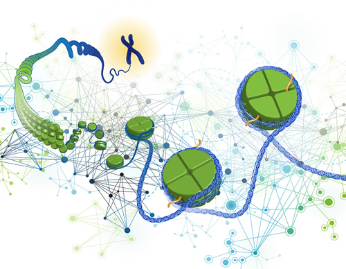

Whole-Genome Sequencing and Functional Genomics
Elucidating the genetic basis of complex diseases has broadened our understanding of the underlying disease mechanisms and has revealed new preventive, diagnostic, and therapeutic approaches. Indeed, we have benefited from an unprecedented number of advancements linking genome variations to complex diseases. Today’s availability of rich genomic data (e.g. transcriptome data, whole-genome sequencing, and EHR-linked biobanks) provide great opportunities for further discoveries, and, more importantly, translating these discoveries into knowledge of disease etiology.
Figure from https://www.genome.gov/27561317/genomics-of-gene-regulation/
Microbiome and Metagenomics
The human microbiome is the totality of all microbes in and on the human body. Thanks to advances in highthroughput sequencing technologies, the importance of the human microbiome in health and disease has been increasingly recognized. Over the last few decades, the number of microbiome sequencing studies has expanded enormously. These studies discover links between communities of microbes and many clinical outcomes, which elucidate the role of the microbiome in complex disease development, progression, and treatment responses. These findings suggest an exciting opportunity to develop new preventive and therapeutic strategies, and to advance precision in disease diagnosis, risk stratification, and treatment decision-making.
Figure from https://www.scientificamerican.com/article/how-gut-bacteria-help-make-us-fat-and-thin/